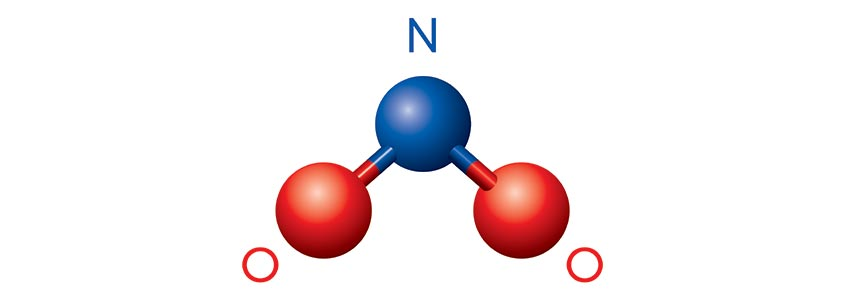
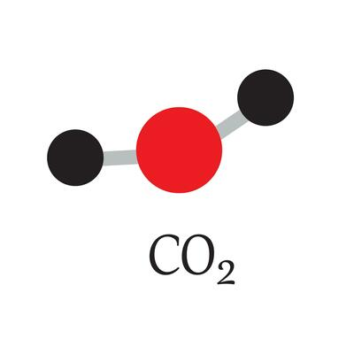
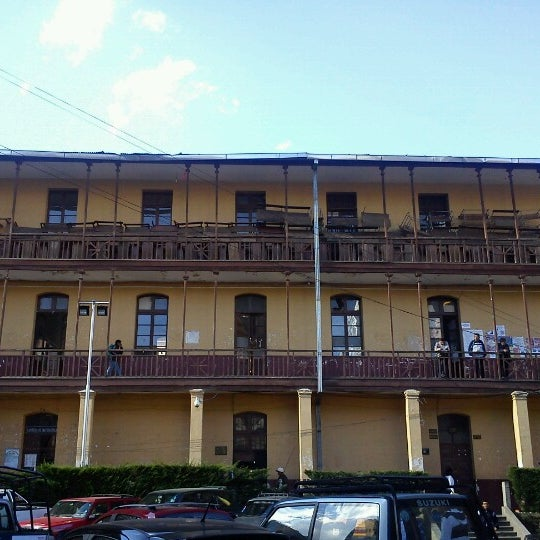
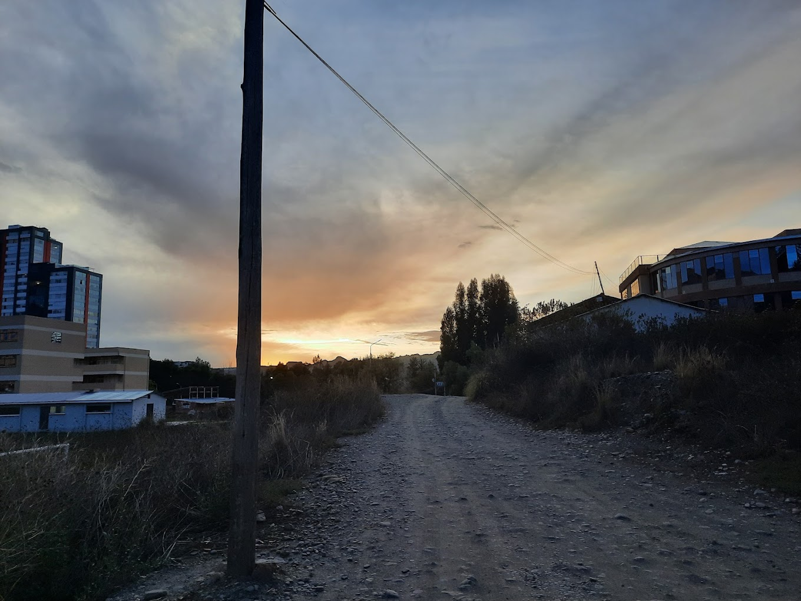

Selecciona un conjunto de datos para explorar:
23/11/2024 - 24/12/2024
Estructura 2D:
Información: El dióxido de nitrógeno es un contaminante atmosférico producido por fuentes industriales y vehículos de motor.
Impacto en la salud: Puede causar problemas respiratorios y agravar enfermedades como el asma.
Estructura 2D:
Información: El dióxido de carbono es un gas de efecto invernadero emitido por actividades humanas como la quema de combustibles fósiles.
Impacto en la salud: Contribuye al cambio climático, lo que tiene efectos indirectos en la salud humana.
Descripción: Esta es una ubicación educativa importante de la ciudad de La Paz, cerca del Campus Central de la UMSA.
Ubicación: -16.50426, -68.12657
Enlace en Maps: Ver en Google Maps
Descripción: Este campus está rodeado de áreas verdes y es ideal para la investigación científica.
Ubicación: -16.53863, -68.06633
Enlace en Maps: Ver en Google Maps
¡Bienvenido! Este es un ejemplo de aire limpio, con niveles bajos de contaminación (PM10: 5 µg/m³).
Este es un ejemplo de aire contaminado, con niveles altos de partículas PM10 (PM10: 40 µg/m³).
En promedio, el aire en La Paz tiene un valor PM10 de 15 µg/m³, lo cual se considera aceptable.
En la derecha, puedes ver un medidor que muestra los niveles de
contaminación cercanos.
La flecha indica la dirección hacia el próximo punto de interés.
Puedes seguir la ruta para explorar más.
Haz clic en la distancia para abrir Google Maps y recibir
indicaciones.
Si deseas cambiar la fecha o volver a ver esta introducción, haz clic en el signo de interrogación en la esquina superior izquierda. ¡Explora y aprende más sobre la calidad del aire en tu ciudad!